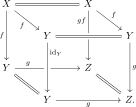

5.3. Congruences, modalities, and saturated classes
Four closure notions meet in this section. Their definitions, and the smallness hypotheses needed to turn them into categorical constructions, are summarized as follows: \begin{center} \small \begin{tabularx}{\textwidth}{@{}lXX@{}} \toprule Class & Closure properties & Small-generation consequence \\ \midrule Saturated & Isomorphisms, composition, colimits & Left class of a factorization system. \\ Acyclic & Saturated and stable under base change & Left class of a modality. \\ Strongly saturated & Saturated and 2-out-of-3 & Kernel of an accessible localization. \\ Congruence & Strongly saturated and stable under base change & Kernel of a logos morphism. \\ \bottomrule \end{tabularx} \end{center} In particular, neither “acyclic class” nor “congruence” includes a smallness condition. Small generation is stated separately whenever it is needed to produce a modality or a quotient logos.
We will establish three relations among these notions. First, the acyclic class \(\Sigma^m\) generated by a set \(\Sigma\) is of small generation and hence defines a modality. Second, congruences are precisely the acyclic classes closed under diagonals. Third, closing a set under iterated diagonals before taking its acyclic closure gives the generated congruence:
These results will be our main tool for checking that localizations of topoi are again topoi. As an application, they give a short proof that the category of sheaves on a Grothendieck site is a topos; we spell this out in Section 6.1. This application seems to be a new observation by Marc Hoyois which, to the note-taker's knowledge, does not appear in the literature.
We denote by
the partially ordered sets of saturated classes, strongly saturated classes, acyclic classes, modalities, and congruences in \(T\), with partial order given by inclusion. We regard a modality as its left class, giving inclusions \(\Mdl(T)\subseteq\Acyc(T)\subseteq\Sat(T)\), while \(\Cong(T)\subseteq\Acyc(T)\cap\SSat(T)\).
Given a class of morphisms \(\Sigma \subseteq \Ar(T)\), we define the following closures:
\(\Sigma^s\): the saturation (closure under composition, identities, and colimits).
\(\Sigma^{ss}\): the strong saturation (closure under composition, colimits, and 2-out-of-3).
\(\Sigma^m\): the smallest acyclic class containing \(\Sigma\).
\(\Sigma^c\): the smallest strongly saturated class closed under base change containing \(\Sigma\).
5.3.1. Generated acyclic classes and modalities
The notation \(\Sigma^m\) refers a priori only to an acyclic class. We now show that if \(\Sigma\) is a set, this acyclic class is of small generation and therefore is the left class of a modality.
Proposition 5.32. ([Anel et al. 2022, Lemma 3.2.13, Proposition 3.2.18, Corollary 3.2.19])
Let \(T\) be a topos, let \(\Sigma\) be a set of morphisms, and let \(\Gg\) be a set of generators of \(T\). Let \(\Sigma^{bc}\) denote the set of base changes of morphisms in \(\Sigma\) to objects in \(\Gg\). Then we have
In particular, \(\Sigma^m\) is a modality of small generation.
Proof
On classes of small generation, the assignments \(\Sigma \mapsto \Sigma^m\) and \(\Sigma \mapsto \Sigma^c\) define the respective left adjoints to the inclusions of modalities and congruences into saturated classes. Without a smallness restriction, the same closure operations are left adjoint to the inclusions \(\Acyc(T)\hookrightarrow\Sat(T)\) and \(\Cong(T)\hookrightarrow\Sat(T)\) at the level of partially ordered classes.
5.3.2. Characterizations of congruences
The definition of \(\Sigma^c\) involves closure under 2-out-of-3, an operation over which we have little explicit control. The following characterizations replace it by finite-limit or diagonal closure.
Let \(\Ee\) be a category with finite limits and let \(K\) be a class of morphisms in \(\Ee\) which contains all identities and is closed under finite limits. Then \(K\) satisfies the left cancellation property. Dually, a class containing all identities and closed under finite colimits satisfies the right cancellation property.
Proof

The following conditions are equivalent for a class of morphisms \(K\):
\(K\) is a congruence;
\(K\) is strongly saturated and stable under base change;
\(K\) is strongly saturated and closed under finite limits;
\(K\) is saturated and closed under finite limits;
\(K\) is an acyclic class and is closed under diagonals: if \(f\colon X \to Y\) is in \(K\), then so is \(\Delta_f\colon X \to X \times_Y X\).
Proof
5.3.3. Décalage and generated congruences
We now extract the largest congruence contained in an acyclic class. Iterating this construction will turn diagonal closure into the explicit formula for a generated congruence.
Definition 5.36. ([Anel et al. 2024, Section 2.2.7])
Let \(L\) be an acyclic class in \(T\). We define the décalage of \(L\) by
We inductively define \(D^n(L)\) by \(D^0(L) := L\) and \(D^{n+1}(L) := D(D^n(L))\). Finally, we set \(D^{\infty}(L) := \cap_n D^n(L)\).
Proposition 5.37. ([Anel et al. 2024, Section 2.2.7])
If \(L\) is an acyclic class, then \(D(L)\) is again an acyclic class. If \(L\) is of small generation, then so is \(D(L)\); in this case both classes are left classes of modalities.
Proof

For an acyclic class \(L\) in \(T\), the class \(D^{\infty}(L)\) is a congruence. Moreover, it is the largest congruence contained in \(L\). Thus \(L\mapsto D^{\infty}(L)\) defines a right adjoint \(\Acyc(T)\to\Cong(T)\) to the inclusion \(\Cong(T)\hookrightarrow\Acyc(T)\).
Proof
We now state and prove the main result of this section. Given a class of morphisms \(\Sigma\), write \(\Sigma^{\Delta}\) for the closure of \(\Sigma\) under diagonals \(f \mapsto \Delta_f\). Thus \(\Sigma^{\Delta}\) consists of the maps in \(\Sigma\) and all their iterated diagonals.
Theorem 5.39. (Anel–Biedermann–Finster–Joyal, [Anel et al. 2022, Proposition 4.2.12])
Let \(T\) be a topos and let \(\Sigma \subseteq \Ar(T)\) be a set of maps. Then the congruence \(\Sigma^c\) is given by
the acyclic class generated by the iterated diagonals of \(\Sigma\). This class is of small generation and hence is the left class of a modality.
Proof
The same formula holds for an arbitrary class \(\Sigma\), see [Anel et al. 2022, Proposition 4.2.12]. One writes \(\Sigma\) as the union of a filtered system of sets closed under taking the diagonals that have already appeared and then uses that both acyclic and congruence closure preserve these filtered unions. The set case above is the form needed in these notes, and it has the additional advantage that \((\Sigma^{\Delta})^m\) automatically defines a modality.
The formula \(\Sigma^m = (\Sigma^{bc})^s\) for the acyclic class generated by a set \(\Sigma\) does not have the naive congruence analogue: we generally have \(\Sigma^c \neq (\Sigma^{bc})^{ss}\). Indeed, the right-hand side generally has no reason to be closed under base change.
For a set \(\Sigma\), Theorem 5.39 and Proposition 5.32 show that the congruence \(\Sigma^c=(\Sigma^{\Delta})^m\) is of small generation. Thus the quotient by the generated congruence exists as a quotient logos.
If \(\Sigma \subseteq \Ar(T)\) consists of monomorphisms, then \(\Sigma^c = \Sigma^m\).
Proof
References
- Mathieu Anel, Georg Biedermann, Eric Finster, André Joyal. Left-exact localizations of ∞-topoi. I: Higher sheaves. Adv. Math., 400, 64. 2022.
- Mathieu Anel, Georg Biedermann, Eric Finster, André Joyal. Left-exact localizations of ∞-topoi. II: Grothendieck topologies. J. Pure Appl. Algebra, 228 (3), 63. 2024.